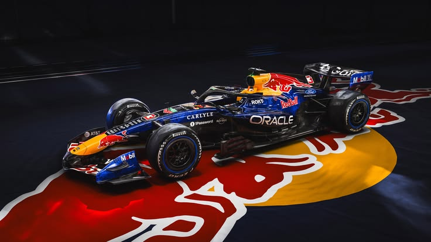

Red Bull представив новий болід RB22
28 лютого 2026
Команда Red Bull Racing провела презентацію нового боліда RB22, створеного відповідно до оновленого технічного регламенту. Інженерна група впевнена у конкурентоспроможності машини на новий сезон.
Інформаційний сайт про команду Формули-1 | Сезон 2026
До старту: Гран-прі Канади 2026
Цей блок демонструє ефект плавного зникнення тексту. Натисніть кнопку «🌫️ Ефект зникнення тексту» у панелі інструментів вище, щоб побачити ефект у дії.

Команду Red Bull Racing було засновано у 2005 році після придбання компанією Red Bull GmbH команди Jaguar Racing. Штаб-квартира розташована у Мілтон-Кінсі, Великобританія.
Під керівництвом Крістіана Хорнера команда перетворилась на одну з домінуючих сил у Формулі-1, здобувши безліч перемог та кілька чемпіонських титулів. У 2026 році команда вступає в нову еру з оновленими технічними регламентами.
| Сезон | Позиція | Очки | Перемоги |
|---|---|---|---|
| 2010 | 🥇 1-ше місце | 498 | 9 |
| 2011 | 🥇 1-ше місце | 650 | 12 |
| 2012 | 🥇 1-ше місце | 460 | 7 |
| 2013 | 🥇 1-ше місце | 596 | 13 |
| 2022 | 🥇 1-ше місце | 759 | 17 |
| 2023 | 🥇 1-ше місце | 860 | 21 |
28 лютого 2026
Команда Red Bull Racing провела презентацію нового боліда RB22, створеного відповідно до оновленого технічного регламенту. Інженерна група впевнена у конкурентоспроможності машини на новий сезон.
15 березня 2026
Макс Ферстаппен заявив в інтерв'ю, що його головна мета — здобути п'ятий титул чемпіона світу та допомогти команді повернути Кубок конструкторів.
Сортування масиву об'єктів пілотів за ім'ям або очками (функції sortByName та sortByPoints):